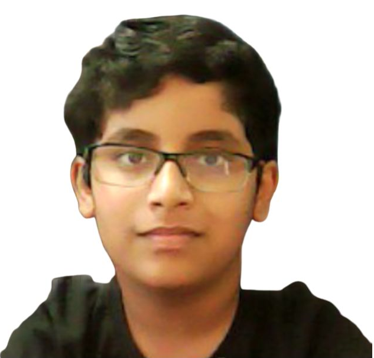
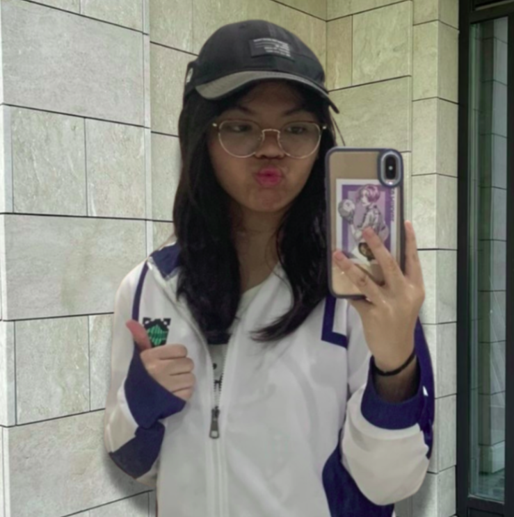
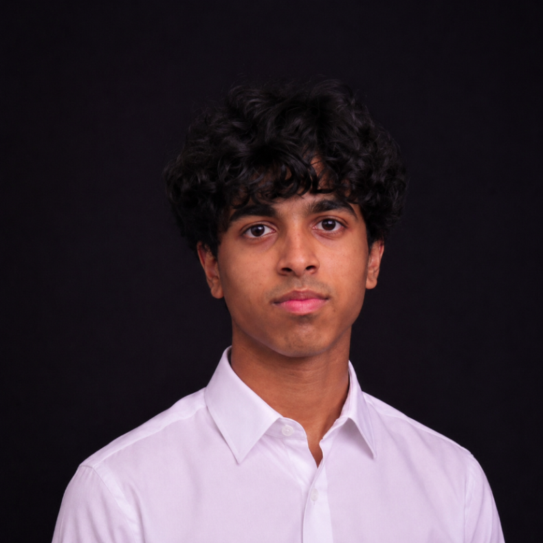
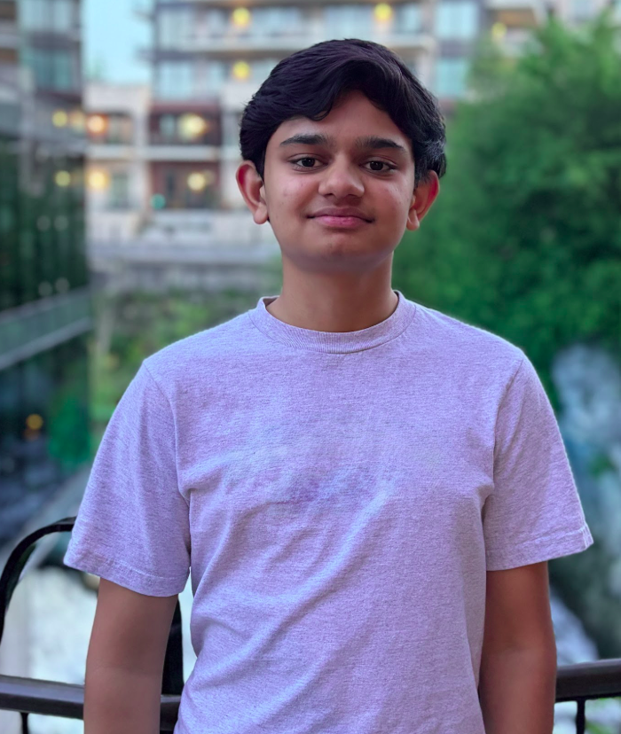
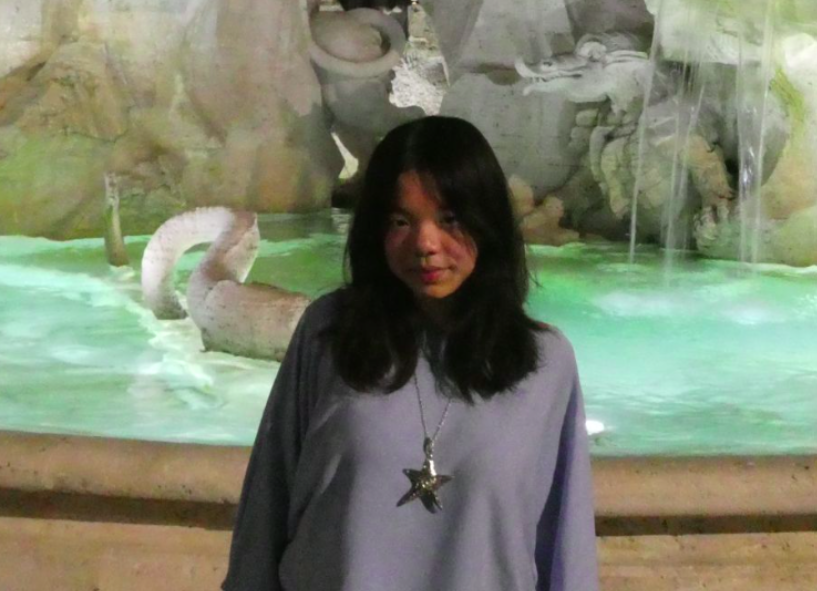

Accessibility
Making STEM opportunities easier to find, understand, and join.
Student-led STEM community
STEM2Connect helps students explore science, technology, engineering, and mathematics through enriching webinars, educational workshops, and a supportive global community.
Meet students who are curious about STEM and excited to learn together.
Discover webinars, workshops, research conversations, and educational opportunities.
Build confidence, ask questions, and find inspiration from researchers and peers.
About & Mission
STEM2Connect was founded to give everyone access to STEM opportunities and educational activities. We create welcoming spaces where students can learn from researchers, explore scientific fields, and connect with others who share their curiosity.
At STEM2Connect, we are dedicated to narrowing the gap between students and the scientific community through enriching webinars, educational workshops, and meaningful dialogue with world-renowned researchers. Our mission is to empower the next generation of STEM leaders by fostering access, insight, and inspiration.
Making STEM opportunities easier to find, understand, and join.
Encouraging students to ask questions, explore ideas, and discover new fields.
Creating a supportive environment where students can learn with and from one another.
Connecting learners with researchers, mentors, and stories that make STEM feel possible.
What We Do
STEM2Connect supports students through educational programming, student-friendly STEM communication, and community spaces designed to make science more approachable.
We host conversations with researchers, students, and STEM speakers so participants can learn directly from people working in science and technology.
We make complex STEM topics more accessible through workshops and beginner-friendly learning sessions.
Through Discord and social platforms, students can discover opportunities, ask questions, and stay updated on upcoming STEM activities.
We share educational content, spotlight opportunities, and help students feel more confident exploring STEM fields.
Events & Webinars
Watch recordings directly from the site and join our Discord to hear about new webinars as soon as they are announced.
September 25th
September 28th
October 11th
More events are on the way. Join our Discord to get notified first.
Join Discord →This student-friendly session explores why cybersecurity matters, how information can be hidden in everyday life, and how different encryption methods compare in strength and security.
Students work through examples of monoalphabetic and polyalphabetic encryption, learn why some methods are more secure than others, and see why perfect secrecy is impossible in practice.
Watch on YouTube →A student-focused session exploring how researchers study the brain, how science communication makes STEM more accessible, and how students can begin exploring research pathways.
Watch on YouTube →A beginner-friendly introduction comparing traditional programming and machine learning, covering supervised learning, regression basics, gradient descent, and model generalization.
Watch on YouTube →Featured researchers share how they found early research opportunities, what research looks like day-to-day, and practical advice for students beginning their STEM journey.
Watch on YouTube →An introduction to harmful algal blooms, water quality, ecosystem health, public health impacts, and ways students can take part in environmental science and citizen science.
Watch on YouTube →A hands-on introduction to electronics, circuits, electricity, creative problem-solving, and how students can begin building and exploring engineering through practical projects.
Watch on YouTube →A biology-focused webinar covering plant hormones, photosynthetic adaptations, transport systems, and experimental approaches useful for students interested in biology and research.
Watch on YouTube →A chemistry session exploring dative bonds, coordination complexes, molecular geometry, chelation, and how these ideas connect to biology, medicine, and caffeine extraction.
Watch on YouTube →A practical look at how AI systems work, where they fail, and what makes them safe, reliable, and efficient in real-world use.
Watch on YouTube →A discussion on dyscalculia, its neurobiology, early signs, diagnosis, interventions, and how students can support others with learning differences.
Watch on YouTube →A poster presentation session highlighting student research on the pancreas, enzymes, and the process of scientific communication.
Watch on YouTube →A practical webinar on reaching out for research opportunities, building credibility, and turning a cold email into a real opportunity.
Watch on YouTube →A clear overview of enzyme function, catalysis, Michaelis-Menten theory, and a review of the related lab concepts.
Watch on YouTube →A beginner-friendly introduction to stereochemistry, molecular handedness, and why structure matters in chemistry and biology.
Watch on YouTube →A look at how music affects the brain and supports recovery, learning, and emotional well-being across different populations.
Watch on YouTube →A session on post-cardiac surgery hallucinations, risk factors, surgical complications, and the science behind these experiences.
Watch on YouTube →An exploration of bacterial toxins, their biology, and how researchers are turning these molecules into tools for medicine and biotechnology.
Watch on YouTube →Our Team
Our team members help organize events, share opportunities, create educational content, and build a welcoming community for students interested in STEM.

Executive Director
Being interested in STEM during high school can come with many challenges, such as struggling with cold emailing or lacking a space to express your interests. I joined STEM 2 Connect because I truly believe in our mission to create more accessible, high-level resources for high school students! Through our events, I hope we can help bridge that gap and inspire more students to learn and pursue their passions in STEM-related fields.

Executive Director
For many students interested in STEM, it can be difficult to figure out which specific field they are passionate about and how to find meaningful opportunities in that area. STEM2Connect was created to build a community of like-minded students who can explore scientific concepts, discuss research and opportunities, and support one another along the way. I share this passion and hope to help students discover their interests, gain access to valuable resources, and find their own path in STEM2Connect.

Social Media Director
I joined S2C because I am passionate about making STEM opportunities more accessible for students. Many programs, competitions and resources go unnoticed because students don’t know that they exist. As a member of Stem2Connect, I hope to help share these resources through the light of social media, connect with students with valuable resources and build a supportive community that encourages exploration and growth!

Social Media Director
I joined S2C because I wanted to help make STEM opportunities more accessible and visible to students. As Social Media Director, I enjoy using creativity and digital media to share resources, promote events, and connect students with opportunities that can inspire their interest in STEM. I believe social media is a powerful tool for building community and encouraging the next generation of innovators.

Program Director
I joined STEM2Connect because I wanted to create meaningful educational resources for the STEM fields. It gives me the opportunity to teach what I’ve learned in school to a wider audience. Our guest speakers have widened my perspective of what’s possible and I hope that STEM2Connect’s offerings do the same for our participants too.

Communications Director
I have a strong interest in biology related fields especially biotechnology and pharmaceutical sciences, I genuinely enjoy learning new things, and my curiosity is what led me to S2C. What attracted me most was its mission to make STEM more accessible and engaging for students everywhere. I joined this organization because I believe that knowledge should be shared, not limited, and I'm excited to contribute by helping others explore their interests.

Outreach Director
Since my childhood, I was very keen to learn about various aspects of science. It could be related to Astrophysics, Astronomy, Space Science or whatever I come across in the field of science. I even learned and executed Robotics related projects and also got the opportunity to teach students of other schools. As the AI emerged, I got equally attracted towards it and I eventually worked on some Serious AI based projects (Hackathons). So this curiosity and enthusiasm keeps me on my toes. I want to share the knowledge with other colleagues and students and hence I am also running my Youtube Channel. I think there is no better moral work than sharing knowledge with others. I think I could contribute via the S2C platform and hence I joined it.

Board Member
Being able to access a high-quality education is a privilege that many people often overlook. Countless students around the world still struggle to access the quality education and opportunities they deserve. STEM has been a constant part of my life since I was little, which is why I joined S2C to help address these barriers and create more opportunities for students, especially those from marginalized communities, to access research and other STEM activities. I also hope to help expand these initiatives and reach even more students where realistically possible.

Programs Team
As someone who previously wanted to get into robotics and engineering, I know how hard it is to find the right resources to guide you in this day and age. I joined this organization to provide direction to students who feel lost and want to delve into the world of STEM.

Programs Team
I joined STEM2Connect because I want to offer other students the same opportunities I’ve received. I’m passionate about bridging the gap between ambitious high school students and genuine learning opportunities because I understand how difficult it can be to find STEM opportunities where students can develop their skills and connect with the scientific community, especially in countries with fewer accessible STEM resources. Even as a student in America, where opportunities are much more accessible, it was difficult for me to get started. I can only imagine how much harder it could be for a student without the same access to resources. That’s why I love STEM2Connect. It gives students from around the world the opportunity to connect with the scientific community and pursue STEM, regardless of where they live.

Programs Team
I joined S2C to help students who are missing out on opportunities because they don’t know where to look. There are many competitions, internships and other ways of getting involved with STEM, but it can be hard to find out about something that not everyone knows about and may not even have access to. Since I have always been interested in STEM, I want to make these opportunities easier to discover for other students. Through S2C, I am looking to help students gain experiences that might help them to learn more about their interests.
Join Us
Join the STEM2Connect community to discover upcoming webinars, connect with other students, and explore STEM opportunities. Discord is the best place to stay updated and get involved.
Testimonials
Hear from students, speakers, and community members who have participated in STEM2Connect webinars and activities.
Contact & Socials
Follow our platforms for webinar announcements, STEM content, student opportunities, and community updates.